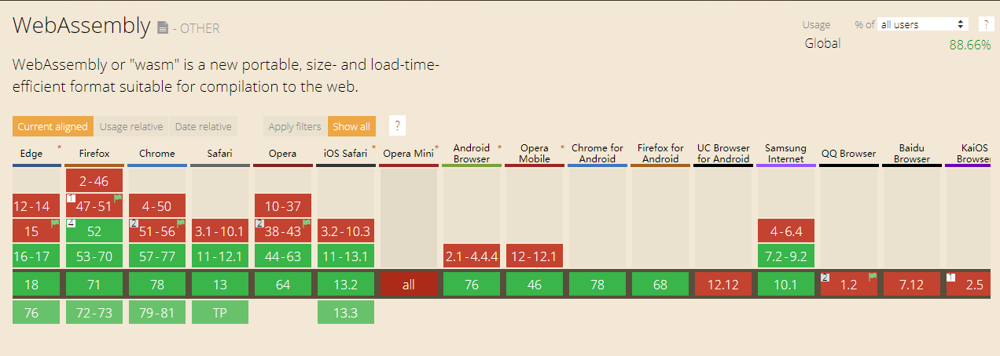
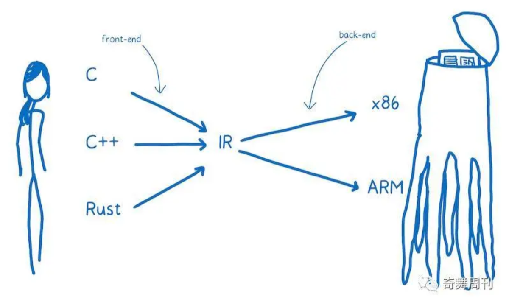
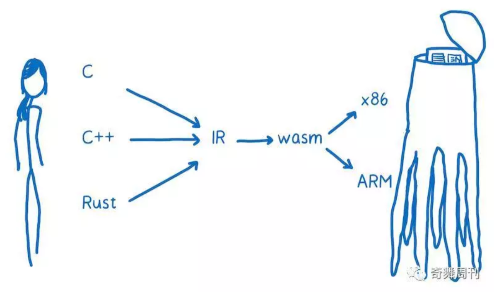
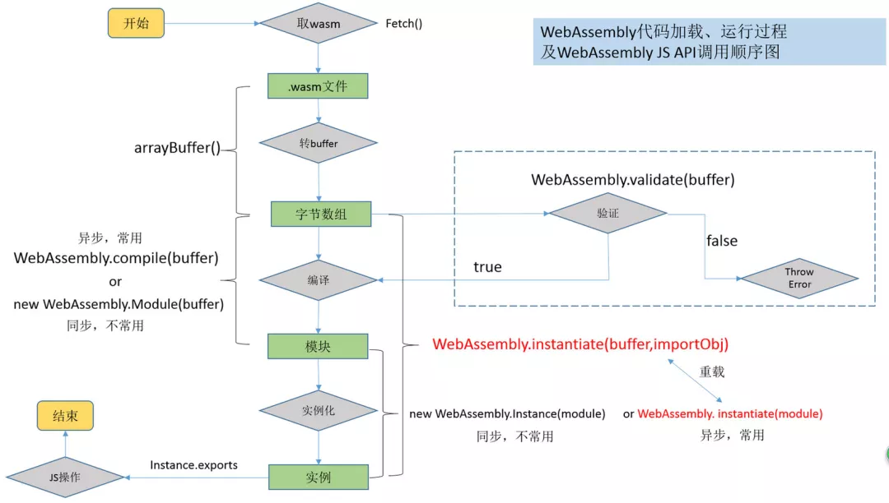
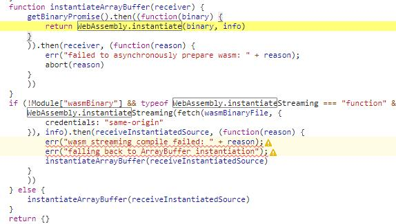
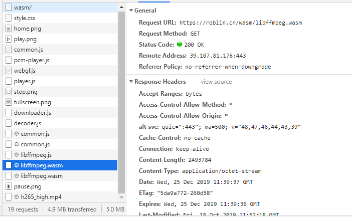
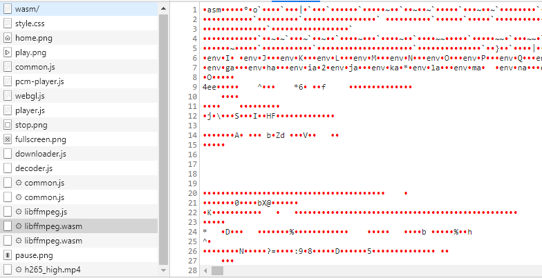

浅谈WebAssembly
概述
WebAssembly（缩写为Wasm）是一种新的编码方式，编码标准。它并不是一门编程语言，而是一份字节码标准，需要用高级编程语言编译出字节码放到 WebAssembly 虚拟机中才能运行， 浏览器厂商需要做的就是根据 WebAssembly 规范实现虚拟机。
wasm格式的文件，接近java的字节码，它是通过编译工具（如Emscripten）从高级语言（如C / C ++ / Rust）等编译而来，他可以同js文件一样运行在客户端与服务端。2019年12月5日，W3C WebAssembly 工作组发布 WebAssembly 正式推荐标准（W3C Recommendation）。
WebAssembly具有巨大的意义——它提供了一条途径，以使得以各种语言编写的代码都可以以接近原生的速度在Web中运行。

为什么需要WebAssembly
- javascript语言本身的缺陷，如，没有静态变量类型、语法太灵活导致开发大型 Web 项目困难。
- 解释性语言的执行效率相比底层语言要慢很多，性能问题无法突破。
WebAssembly 有什么优点
- 体积小：由于浏览器运行时只加载编译成的字节码，一样的逻辑比用字符串描述的 JS 文件体积要小很多；
- 加载快：由于文件体积小，再加上无需解释执行，WebAssembly 能更快的加载并实例化，减少运行前的等待时间；
- 兼容性问题少：WebAssembly 是非常底层的字节码规范，制订好后很少变动，就算以后发生变化,也只需在从高级语言编译成字节码过程中做兼容。可能出现兼容性问题的地方在于 JS 和 WebAssembly 桥接的 JS 接口。
WebAssembly 是如何工作的
我们都知道，机器只能识别0与1，但是这些机器码对人来说是难以阅读与理解的，对于js开发人员来说，JS运行环境中都存在着JavaScript引擎，它的工作就是把你的人类语言转化成机器所理解的语言，而翻译的过程一般有两种模式：
- 使用解释器，翻译的过程基本上是一行一行及时生效的。
- 使用编译器，在执行前翻译。
两种方式各有利弊，实际的浏览器厂商开始引入了编译器来解决解释器重复执行的问题，此处有兴趣的可以了解下浏览器的JIT模式
一般高级语言不会直接通过编译器直接将语言转化为机器语言（如，汇编），这样效率比较低，通常编译器将把高级语言翻译成一种更低级的语言，但比机器码的等级高。这就是中间代码（IR）：

编译器的“前端”将高级编程语言转换为IR。编译器的“后端”将 IR 转换成目标机器的汇编代码。
而WebAssembly 字节码不能直接在任何一种 CPU 架构上运行，它是一种抹平了不同 CPU 架构的机器码，由于非常接近机器码，可以非常快的被翻译为对应架构的机器码（它比 JavaScript 代码更快更直接的转换成机器代码，但它们不直接和特定硬件的特定机器代码对应）：

浏览器加载wasm文件后，可以迅速将WebAssembly 字节码转化为机器码，因而执行效率非常高。
在浏览器使用WebAssembly
对于JavaScript调用wasm（目前还不能像js文件那样直接引用，只能通过 JS 去加载和执行），一般采用如下步骤：
加载wasm的字节码。
将获取到字节码后转换成 ArrayBuffer，只有这种结构才能被正确编译。编译时会对上述ArrayBuffer进行验证。验证通过方可编译。编译后会通过Promise resolve一个 WebAssembly.Module。
在获取到 module 后需要通过 WebAssembly.Instance API 去同步的实例化 module。
上述第2、3步骤可以用instaniate 异步API等价代替。
之后就可以和像使用JavaScript模块一样调用了。
完整的步骤，也可以参见下面的流程图：

我们看一个实际的demo : 通过wasm实现的一种视频播放器
查看源码可以看到：

控制台里面有.wasm调用：


当然，在WebAssembly也可以调用js, 例如通过WebAssembly.instantiate方法等，此处不再详细介绍。
个人看法
WebAssembly可以说是web领域的一种扩展，他与javascript是互补，它更多是用在需要大量计算的场景，如大型游戏等，并不是要取代(也无法取代)javascript。其学习成本还是比较高的，而且还有许多性能问题需要去解决，目前成熟的产品似乎只有Google Earth，Egret Engine等，现阶段了解即可，因为几乎没有什么应用场景。WebAssembly依旧任重而道远，且看web的翻天覆地变化吧~